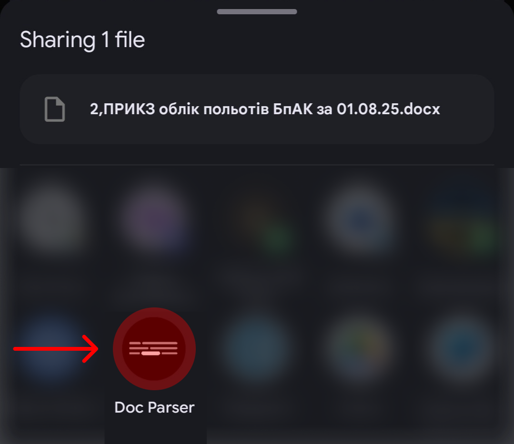
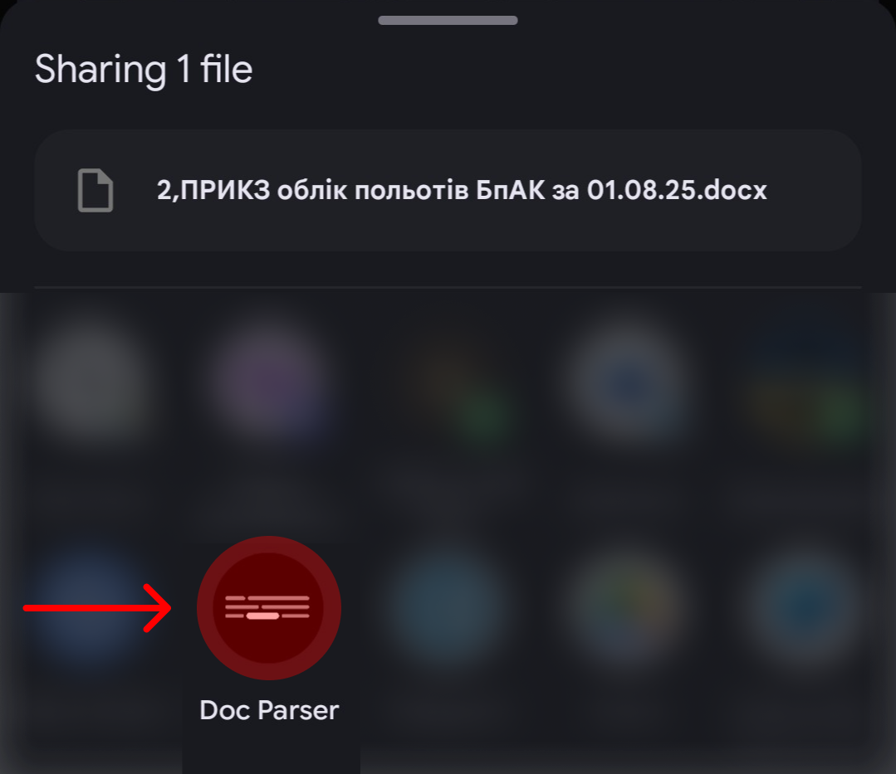

Для роботи на Android та PC
1. Додати цю сторінку як застосунок Doc Parser на робочий стіл
2. Поділитися одним або декількома DOCX-файлами з цим застосунком


 

Для роботи на iPhone

Для роботи через cURL
1. Запакувати документи у ZIP-архів
2. Надіслати архів до серверу для обробки та зберегти результат у вигляді HTML-сторінки
curl https://go-doc-parser.onrender.com -F "in=@documents.zip" > out.html